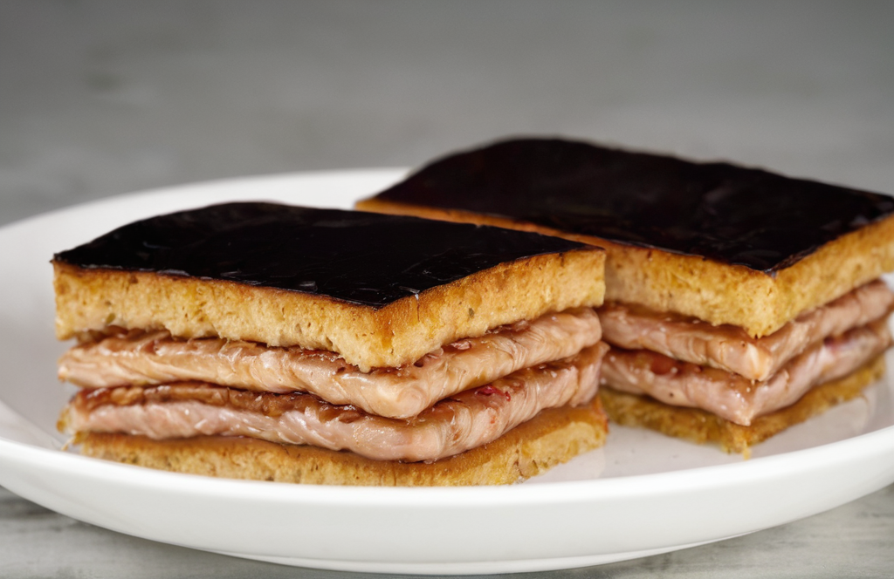

Hozzávalók:
Tészta:
- 250 g liszt
- 200 g vaj vagy margarin
- 100 g porcukor
- 1 tojássárgája
- 1 ek tej vagy tejföl
- 1 vaníliás cukor
- 1 tk sütőpor
Töltelék:
- 200 g dió vagy mandula, darálva
- 150 g cukor
- 1 dl tej
- 1 vaníliás cukor
- 1 ek kakaópor
Bevonat:
- 150 g étcsokoládé
- 1 ek olaj vagy vaj
Elkészítés:
- Először készítsük el a tésztát. A lisztet, a porcukrot, a vaníliás cukrot és a sütőport keverjük össze egy tálban.
- Adjuk hozzá a hideg vajat vagy margarint, majd morzsoljuk össze az ujjainkkal, amíg morzsás állagú lesz.
- Keverjük hozzá a tojássárgáját és a tejet vagy tejfölt, majd gyúrjuk össze egy tésztává. Ha szükséges, hűtsük le a tésztát hűtőszekrényben legalább fél óráig.
- Amíg a tészta hűl, készítsük el a tölteléket. Egy lábasban keverjük össze a darált diót vagy mandulát, a cukrot, a tejet és a vaníliás cukrot.
- Főzzük közepes lángon folyamatos keverés mellett, amíg a töltelék besűrűsödik.
- Vegyük le a tűzről, majd keverjük hozzá a kakaóport. Hagyjuk teljesen kihűlni.
- Amikor a tészta és a töltelék is kihűlt, nyújtsuk ki a tésztát két egyforma lapra, majd fektesük az egyiket egy kivajazott vagy kibélelt tepsibe.
- Kenjük rá a tölteléket, majd fedjük be a másik tésztalappal. Nyomkodjuk össze a széleit.
- Süssük előmelegített sütőben 180°C-on kb. 25-30 percig, vagy amíg a tészta szép aranybarna.
- Miután kihűlt, olvasszuk fel a csokoládét a vajjal vagy olajjal, majd öntsük a sütemény tetejére.
- Hagyjuk megdermedni a csokoládét, majd szeleteljük fel és tálaljuk.